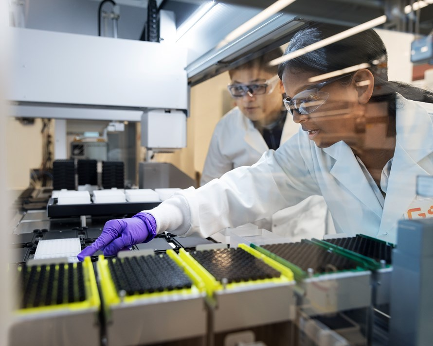

Behind the science
Innovation is doubling the odds of life-changing discoveries
The road to creating new medicines and vaccines has traditionally been long and winding, but modern technologies are helping scientists deliver what patients need faster than ever before